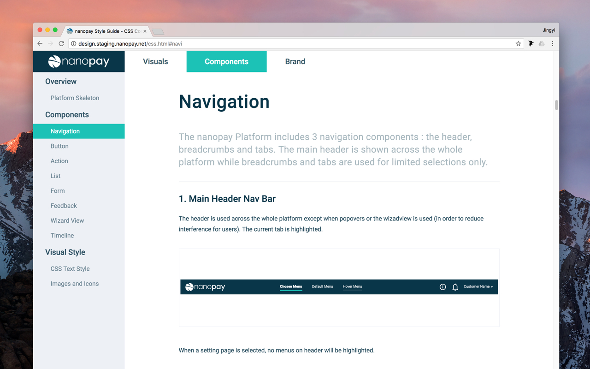
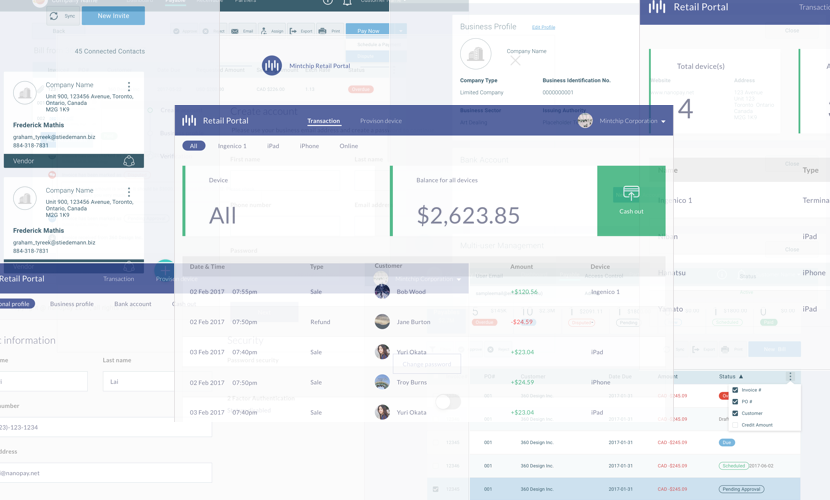
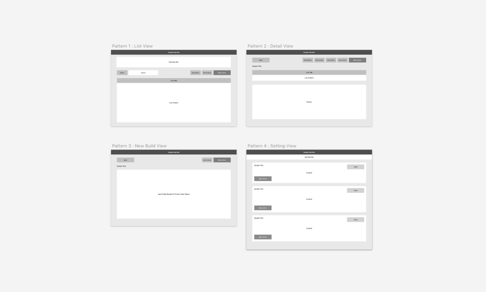
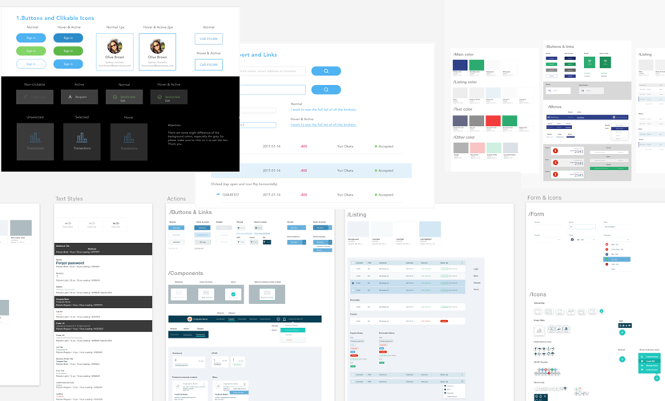
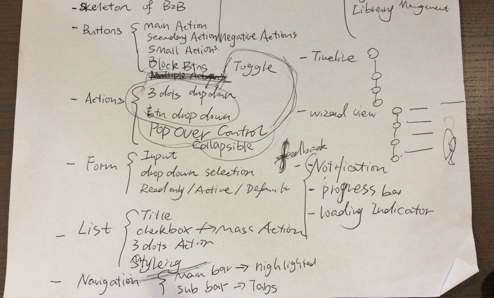
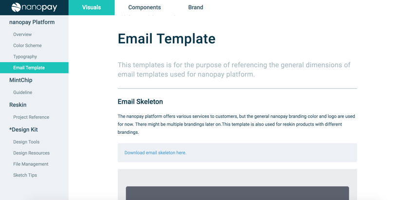
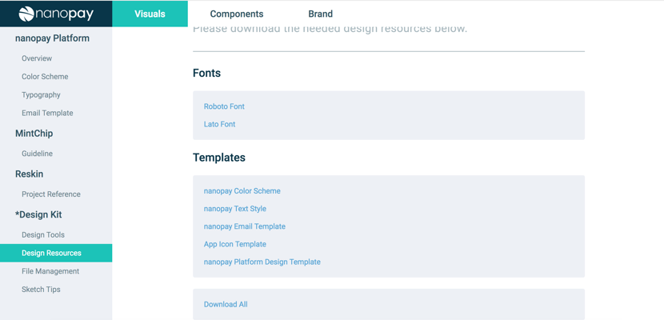
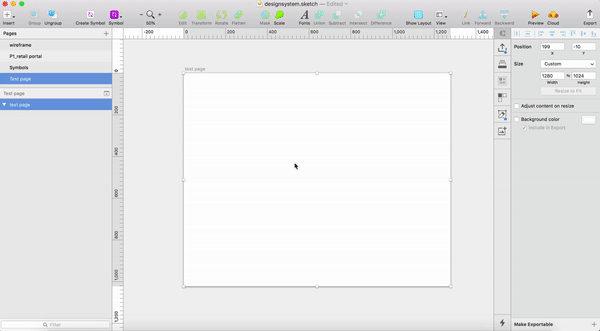

nanopay Design System: Accelerating The Design & Development
System Design, Front-end Development

3-1
nanopay Design System is a structural and visual guideline to standardize and accelerate the design & development process.
It consists of a live style guide with reusable components, design guidelines, CSS snippets, and a component library for designers.
Background & Problem
As the company grows, we've been adding more and more payment services. The scaling has caused some problems: customers have to switch between different accounts to access different services; developers have to manage different platforms with similar structures separately; the designer has more and more separated design files in the drive.
We've made a crucial decision: Unify all our services to the core nanopay platform while switching our technology framework to FOAM for higher perfromence.
This is a critical challenge for me, as this required an overall deep review of the existing products and a more visionary, compatible and mindful design.
Goals & Limitation
Design goals should always match with the business goals:
Standardize and unify the visual style, components used for different services to deliver a smooth deliver a smooth, beautiful and consistent user experience.
Create a universal skeleton of the platform for scaling and future development
Due to limited resources and tight deadlines to deliver products to our clients, we had to minimize the development cost, which means we could not afford a complete redesign. What I decided was to put the latest B2B portal as the main and revise based on it.
The Foundation: Seeking The Patterns
Building up the design system is like building a house, you will need to build the foundation first, then gradually adding the bricks and concrete, and finally paint it in the beautiful colors you like.
Therefore, the first step I took is to go through all of the existing products and look for commonalities. We have the Retail Portal , B2B Portal , Support Portal and other web-based tools for our clients. . I categorized the UI design based on the different structures and created the general layout.

3-2-1 / Looking for patterns in the sea of UIs
As a result, I summarized 4 patterns for the platform: List View, Detail View, New Build View and Setting View. They are the key skeletons for the whole platform, and almost all the screens can be categorized into the 4.

3-2-2 / As a payment services provider, the list is an extremely important element: Transactions, invoices, users...they are all living in the system in the form of a list. The detail view and new build view are originated from the list view.
The skeletons have set up the foundation of the platform, next step is to add the bricks.
Adding The Bricks & Concrete: Reusable Components
Remember the giant style guide we create after every project? There are buttons, checkboxes, lists, tables....almost every actionable element appeared in the product. I looked through the style guides and looked for the components playing the same role, then I unified them together based on the design of the B2B portal.

3-2-3 / I created many style guides when working on different projects, which have become a big hard-to-manage burden.
I also did some online research on design systems like Material Design , Shopify's Polaris , Atlassian Design. They focus not only on components, but also animation, marketing, content, etc. As a starting point, I referenced their information architecture and combined the unique nanopay style, finally came up with the following list.

3-2-4 / Initial IA for components part
For each actionable component, I showed how it should look under different statuses, like hover, focus and disabled.
Video/ Above shows the components of the Design System, how the layout of each part looks: a title, an actionable sample, and the explanation.
I also added the use cases for the components, like the main button should be used for primary actions only. Separated components are like separated bricks, only the proper concrete can put them together. Having a specific component dedicated to the specific use cases is the key to deliver a consistent user experience.
Painting The Surface: Visual Style Guide
The last step in building a house is to paint the wall and add the decorations, and for the system, is the visual style guide.
Video/ Above shows the color scheme and text styles of the Design System
Bridging The Gaps
Besides the efforts to standardize and unify the design, I also worked on optimizing the workflow when designers collaborating with the rest of the company.
1. Between Designer & Marketing Team
Sometimes conversations between the marketing team and me are like this:
Hey Jingyi, can you send me a picture of the logo?
What format and size do you need?
Ah, jpg I guess?
And size and resolution?
hmm...What is resolution?
...er, it is like dpi, ppi.
But wait, what do you need this for?
Oh I want to print out a copy to put on the event desk..
I see! In that case, blu blu blu...
Or this:
Hey, Jingyi, can I get a png of the logo?
What is that for?
To replace the twitter profile pic, looks a bit odd now😥
I shared a Google link with you last week
Well, I can't find it, can you just send me through Slack?
sure👍
Marketing folks asked me for branding resources often, and it is hard to find them within massive links. To minimize the unnecessary back and forth, the constant file transfers, I moved the branding resources to the design system and they can have easy access to the files they need.
3-2-5 / I've prepared different formats of logos for prints, social media, design and development.
2. Between Designer & Development Team
We have conversations like this:
Jingyi, what's the hex code for the submit btn in XX portal?
I think it is #xxxxx, you can check on Zeplin
Yeah, but not sure which one to follow, there is a project XX for Client B. Is #xxxxx same for Client C?
Yes, they should be the same
kk, thx
btw, do have an email design for when a user got an invoice?
no...but as it is the same layout as when they received an invoice.
actually, I will make the screen now
thx🙏
As we are managing multiple projects at the same time, when developers are not clear with something they will come to me. While I'm happy to help them, putting the shared style guide online with just one URL away, saved all our days.

3-2-6 / I've designed a general email skeleton with specs so developers can create the email with content only
3. Inside The Design Team
I also shared the design templates of the nanopay web platform, color scheme, universal text styles and email templates.

3-2-7 / Design resources
The Development
I was responsible for designing and developing the design system website. I made a simple and responsive design with the existing color palette, then developed it using plain HTML, CSS and JavaScript. It was launched for internal use at the beginning of 2018.
3-2-8 / To make the menu prominent enough on mobile devices, I chose to show the menu instead of hiding it in the hamburger menu.
Supercharging Designers Workflow
Besides the live style guide, I created a component library in SketchApp to speed up the visual design process. With a shared component library, creating a hi-fi mockup could never be easier, which also makes rapid-prototyping possible in high fidelity.

3-3-1 / I made the general component library a shared library, so all the designers can easily access and use them to quickly make a screen.
Thanks to the powerful features, I was able to do text overrides, color overrides, swapping symbols and finished the mockup in less than 4mins! The plugin Sketch Runner is really a good helper.
As for now, I only identified the proper CSS for different text styles. In the future, we'd like to build our own CSS components library, to accelerate the development process, minimize design discrepancies and reduce the workload on universal changes.